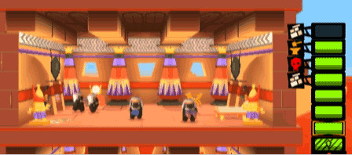
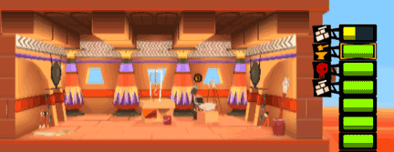
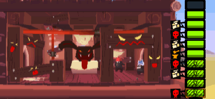
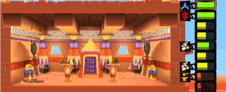

12 |
Les étages |
 |
|
Il y a cinq types d'étages différents. Les différents types d’étages apportent des avantages et des désavantages, aux humains comme aux dieux. La spécialisation d’un étage apparaît seulement une fois que celui-ci est entièrement construit. Toutefois, lors de sa construction, un panneau indique quel sera le type de cet étage.
Avantageux pour : personne. L’étage neutre est l’étage le plus basique. Il n’apporte rien à personne. Particularité : aucune. 
Avantageux pour : les humains. L'entrepôt permet aux transporteurs de stocker des ressources, pour les amener plus tard dans un autre étage, sans avoir à sortir de la tour. Particularité : il peut contenir quatre fois plus de ressources.
Avantageux pour : les humains. La forge est indispensable aux humains. C’est là où l’unité bélier va fabriquer l’outil qui va lui permettre de détruire le portail. Il ne peut y avoir qu’une seule forge dans une tour. Particularité : l'unité bélier est liée à cet étage. Le détruire la fait sortir de la tour. 
Avantageux pour : les humains. Un mauvais prêtre habite cet étage et prêche la mauvaise parole. Cet étage est difficile à détruire. Particularité : très solide, il est impossible d’y placer des pouvoirs défensifs. 
Avantageux pour : les dieux. Le bon temple est un étage uniquement dédié au dieu. Il est construit quand le nombre de points de respect cumulés dans la partie atteint un certain seuil. Un bon prêtre y est toujours présent. Particularité : Cet étage peut être détruit par le joueur en cas de nécessité. Il possède très peu de points de vie. 
|


 |
 |
 |